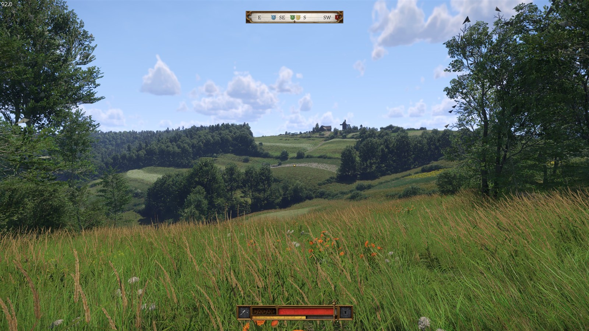
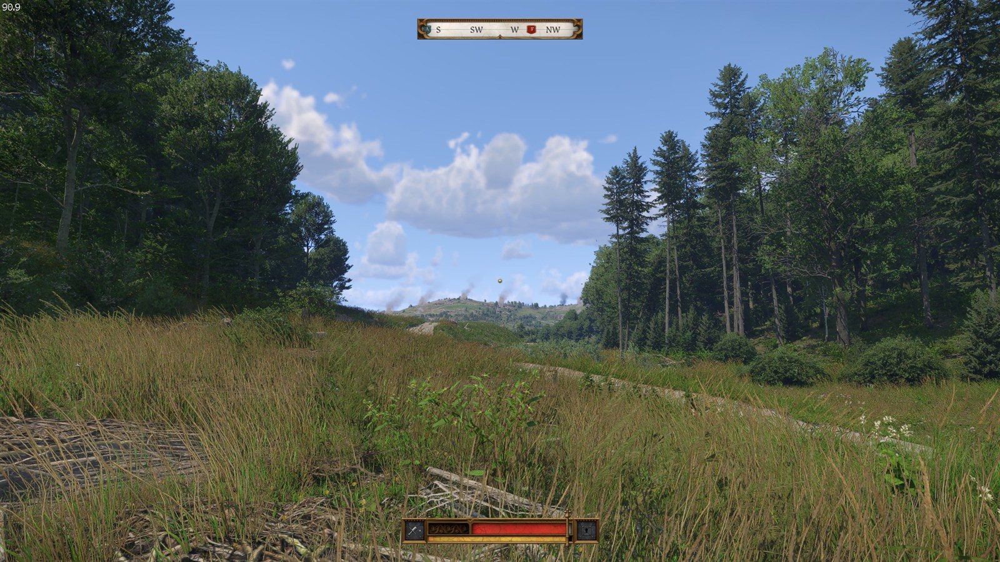
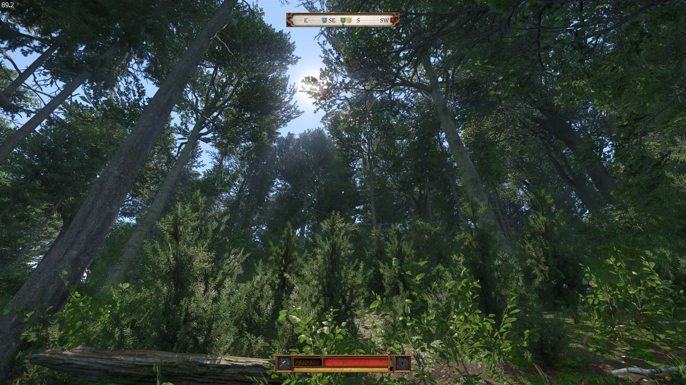

Prepare your games
KCD1 Map needs your installed KCD1, KCD2 1.5.6 and the official KCD2 Modding Tools from Steam. Windows x64 and Microsoft Edge WebView2 are required.
An experimental world converter
Explore the world of Kingdom Come: Deliverance in Kingdom Come: Deliverance II — converted locally from your own installed games.
Windows x64 Setup 0.3.16 prerelease KCD2 1.5.6

A view from the world
Supplied gameplay captures, with the original HUD retained. Visual snapshots, not release-wide acceptance.


Follow development on YouTube and X / @SamGCoder. Screenshots were supplied on 22 October 2026; their exact build was not identified.
01 / Your first journey
KCD1 Map needs your installed KCD1, KCD2 1.5.6 and the official KCD2 Modding Tools from Steam. Windows x64 and Microsoft Edge WebView2 are required.
Get the 0.3.16 win64 executable under release Assets. Python is bundled. Choose a workspace outside the games; allow 200 GiB for a fresh map build plus 64 GiB for installation staging, with extra space for optional baking.
Keep Steam running. In the setup Library, choose Launch mod, continue a Trosky save and ask the coachman to Travel to the Rattay region. The separate New Game entry is experimental.
Already have a build? Keep its original job folder and use Activity → Resume failed setup for eligible upgrades, including completed jobs. Check the version-specific upgrade path before starting again.
02 / Read the evidence
Three different milestones.
Each tells you something different.
The published prerelease is based on recipe 40. It includes the KCD1:MP scenery export ID fix, with a packaged self-test report.
Multiplayer player initialization and two-client gameplay still need in-game acceptance.
Read the release notesThe reviewed source at a9a40cd uses recipe 51. Later work includes NPC activities, designer barriers, a starting torch and supported stale LOD repair.
The source still reports setup version 0.3.16. That string alone does not identify what is included.
See the source / release comparisonRecorded tests confirm selected interactions and sampled bench and sleep behavior. Other activities have structural checks but still need observation in game.
No whole-map, every-NPC or complete campaign acceptance is implied.
Explore the feature checklistSource snapshot reviewed 22 October 2026 (UTC). Follow the linked records for dates, exact builds and pending checks.
03 / Field guides
Detailed instructions live with the source,
so fixes and evidence stay together.
Requirements, lighting choices, Resume, package verification and removal.
Launch & exploreMod Library, private runtime, shader loading and entering the imported world.
Build & reuseWhat can be reused, when inputs invalidate it, and how older-build imports work.
Experimental multiplayerSeparate client/server prerequisites, profile settings and current acceptance limits.
Understand performanceMeasured hardware, Buildings bake scope and the difference from an install-time promise.
ContributeDevelopment prerequisites, validation boundaries and the details that help reproduce a problem.
04 / Before you set out
This is an independent, experimental converter. Expect incomplete gameplay and read the evidence for the build you use.
Known issues & reportsThe bounded Skalitz opening and selected quest conversions do not provide the full original campaign, every DLC state or KCD1 save migration.
World conversion counts do not prove every interaction, collision, lighting transition or save/load path works. KCD1:MP exports scenery, not a cooperative campaign.
The project distributes tooling, not game archives or converted world packages. Use your own installed games. Include version, location, steps and logs in reports, without uploading game content.